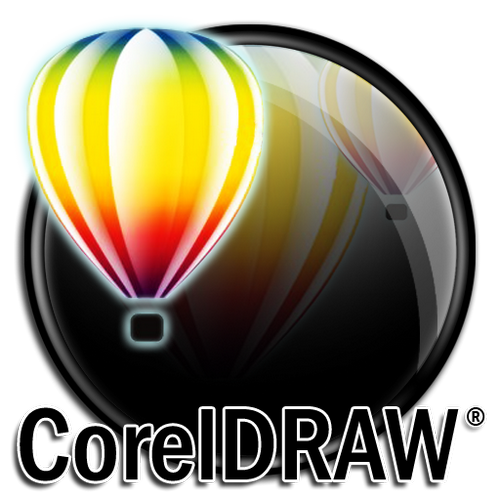
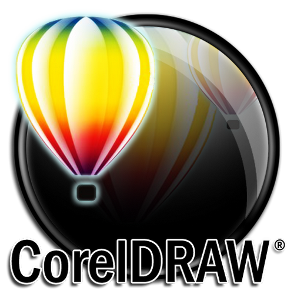
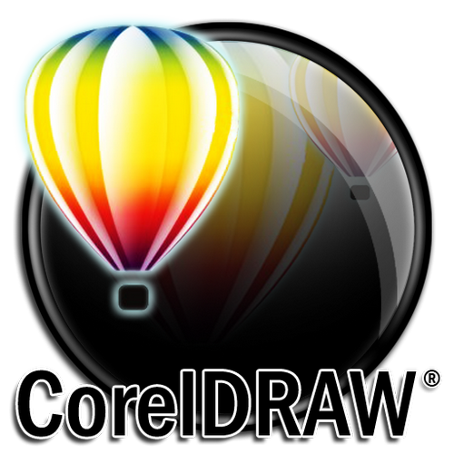
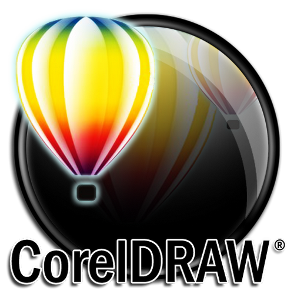

Graphic designing has become an essential aspect of web communications. This course mainly revolves around typography, illustration, design type and photography. As the demand for graphic designers is increasing, the need for creativity and more visual communication is also increasing. A graphic designercombines his creativity with the information technology to deliver a well-packaged design.
Why Graphic Designing?

As important it is designing a website, graphic designing is equally important. People usually see the visuals first then go through the content of the website. If you are graphic designer, you can put in your creativity to blend the text with graphics. Graphic designing not only makes a website attractive, but also creates a brand image.
Our graphic designing course is designed to incorporate the concept, visual aspect and practical integration. This course will be a guide on how to use digital tools and use them strategically as the means of communication. Our program will help you learn the theory and how to implement them into practical applications. The aim of this course is to provide you extensive knowledge on sketching, construction drawing,simplification drawing typography and calligraphy writings by making use of Corel Draw, Adobe Photoshop, and Adobe Illustrator. This program will also involve project work, report submissions, and individual portfolio making. We have qualified professors that are willing to share their knowledge with you and make you understand how graphic designing would influence your career in the future. We also offer exclusive classes for students who need clarification on specific topics. We are here to provide the necessary skills that you need to become an expert graphics, designer. Our purpose is to guide you through your graphical designing course that will shape you towards bright future.